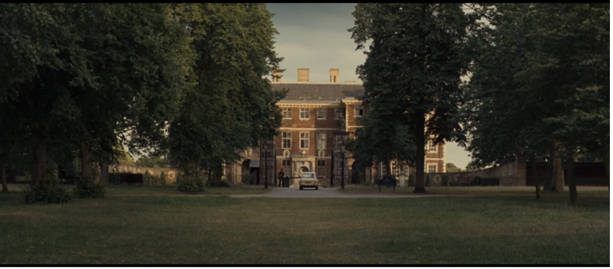
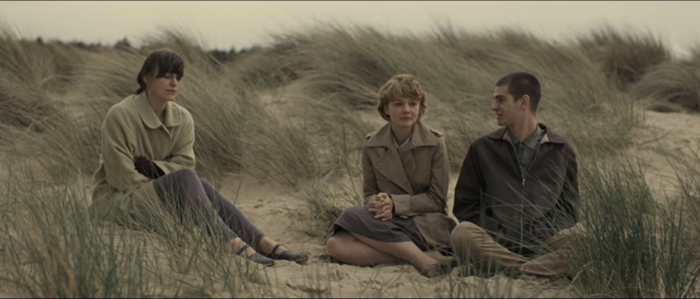
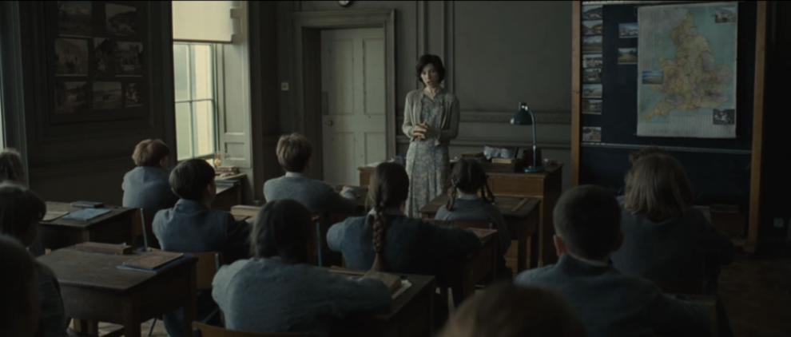
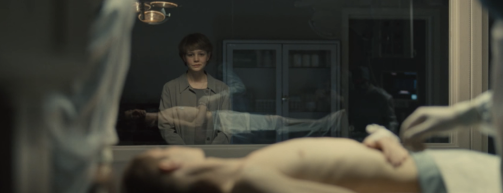

some secrets are hidden in the dark — hover to uncover them
they were raised for their organsdonors, not studentsyour body was never yourscompletion is a kind word for deaththe gallery was never about artharvestedyou were made to be usedthey knew all along
we were taught to acceptno one came to save us
You were told you were special.
You were never told why.
every corridor led to the same endthe doors were never really lockedwe chose not to run
Choose a corridor
Each door holds a piece of the story. Click one to step inside.
Manufactured Humanity
The grounds, the seasons, the illusion that it would last.
Love Without Agency
Bound by emotion and fate in equal measure.
Designed Inequality
The truth was always there. They just had to grow old enough to see it.
Who Counts as Human?
They suffer. They create meaning. They form bonds.
The World We Made
The book ends. Hailsham does not.
Hailsham: Manufactured Humanity

Hailsham was supposed to feel like home. In many ways, it did. The wide open grounds, the changing seasons, the rhythm of classes and meals and evenings spent doing nothing. We didn't question it then. Children rarely do. We collected tokens, traded drawings, whispered about the Gallery like it held some great secret about who we were. Maybe it did.
What stays with you isn't the big moments. It's the small ones. The smell of grass after rain. The way light fell through the dormitory windows in winter. A look exchanged across a room that meant everything and was never spoken about again. Kathy, Tommy, Ruth. The three of us tangled up in something we didn't yet have the words for.
We thought we had time. That's the cruelest part of it. Hailsham felt endless when we were inside it, and now it feels like it lasted no longer than a held breath.
Love Without Agency

At the heart of Never Let Me Go is a love triangle that can't be neatly resolved. Ruth holds onto Tommy tightly, and this creates a wall between him and Kathy. Kathy pushes down her feelings while keeping both friendships alive. In the way she tells the story, you can hear a quiet anger. She knows that Ruth sees Tommy's deeper connection to her and deliberately keeps them apart. Tommy doesn't really notice any of this. Kathy just watches from the side, unable to act on what she feels.
What makes this so painful is that there's no normal way out. The three of them are tied together not just by feelings but by a shared truth: they are clones, made to donate their organs, with futures already decided for them. This knowledge sits behind every conversation, every argument, every silence. It makes their love triangle both deeply human and completely hopeless. Ruth's need to keep Tommy isn't really about winning. It's about wanting to own something in a life where they own nothing, not even their own bodies. By the time Ruth admits the hurt she's caused, it's too late. Kathy and Tommy only come together after Ruth dies, and even then, the time they lost and the endings closing in on them weigh on everything. Ishiguro seems to say that when people have so little control over their lives, their relationships become more precious and more breakable at the same time. These connections are proof that they matter, even when the world has decided they don't.
The System: Designed Inequality

Kathy, Tommy, and Ruth spend most of their childhood at Hailsham not knowing the full truth about what they are. They're told they are "special," that they've been given a good education and real opportunities. But the reality is darker than that. They are clones, made for one purpose: to give away their organs until they "complete." The students feel that something is off. They pick up pieces of information from conversations they overhear, from small hints their guardians drop. But they stay mostly sheltered from the full picture until they leave Hailsham. When the truth finally comes, it is both expected and crushing. It confirms what they always suspected but could never quite put into words.
What makes this so hard to sit with is not the shock. It's the acceptance. Kathy comes to see that Hailsham was built to make them feel human. The art, the literature, the feeling of having choices. All of it was there precisely because society never planned to treat them as fully human. "Completion" is just a softer word for death. The guardians' kindness was a form of control. Their education was a way to make the unavoidable easier to swallow. By the end of the novel, Kathy understands that the truth was always there, threaded through every part of her life at Hailsham. She just had to get old enough to see it. The truth doesn't change everything. It's the slow, painful recognition that nothing was ever what it seemed.
Who Counts as Human?

The question that haunts Never Let Me Go is whether the clones have souls, and more importantly, whether that even matters. Ishiguro never gives a clear answer. Instead, this uncertainty fills every page. The characters themselves struggle with the question. They look for proof of their humanity through art, music, and emotional connection. Kathy collects songs and artworks that might say something about who she is. This is a desperate attempt to show that she has an inner life, something real that can't be reduced to what her body is for. But the novel suggests that the question itself might miss the point. What matters isn't whether they have souls in some abstract sense. What matters is that they long for one.
What makes the clones undeniably human is not their DNA or where they came from, but what they feel. They love. They regret. They long for things. They lose people. They suffer. They make meaning out of their lives. They form bonds that go beyond their situation. Tommy's art, Ruth's jealousy, Kathy's quiet loyalty. These are signs of real thought and feeling that you can't just call biology. Ishiguro argues, without ever saying it directly, that being a person isn't decided by how you were made. It's decided by how you feel, think, and connect with others. The quiet tragedy of this novel is that society strips these clones of their humanity not because they lack souls, but because it chooses to look away. The soul isn't something they need to prove they have. It's something the world refuses to let them claim. Their tragedy isn't about existence. It's about morality. They are fully human in every way that counts, but treated as nothing more than spare parts.
The World We Made
Right now, poor people in parts of Egypt, Pakistan, and India sell their kidneys to pay off debts. The buyers usually live in richer countries with cleaner hospitals and shorter waiting lists. In the Gulf states, workers from Nepal, Kenya, and the Philippines build towers in dangerous heat while their employers keep their passports, so they cannot leave or change jobs. In the United States, people in prison sew clothes and fight wildfires for cents an hour, and most of them cannot get the same work once they are released. In each case, one group of people is used up, another group benefits, and very few people say anything out loud.
The four rooms before this one live inside the novel. This one lives outside it. "Manufactured Humanity" showed a school that felt kind while it raised children to be used for their organs. Indigenous boarding schools in Canada and the United States also felt educational while they tried to erase languages, families, and names. "Love Without Agency" showed three friends who could not choose their own lives. Families split up by deportation, and young people told by caste rules who they may marry, know that feeling too. "Designed Inequality" showed a system hiding behind good manners. Real systems today hide behind work contracts, visa papers, hospital forms, and glossy school brochures. "Who Counts as Human?" asked the question that quietly sits under all four.
Mimi Wong, writing in Electric Literature, reads Ishiguro's clones as a kind of racial metaphor, even though no character is given a race. She points to organ trafficking, commercial surrogacy, and migrant labor as the real Hailshams we already have. The novel lets its readers see the truth slowly, through Kathy's voice. Its real-world versions also show up slowly, kept out of sight by borders, paperwork, and polite language.
Kathy walked out of Hailsham. The world she walked into is the one you are reading this in.